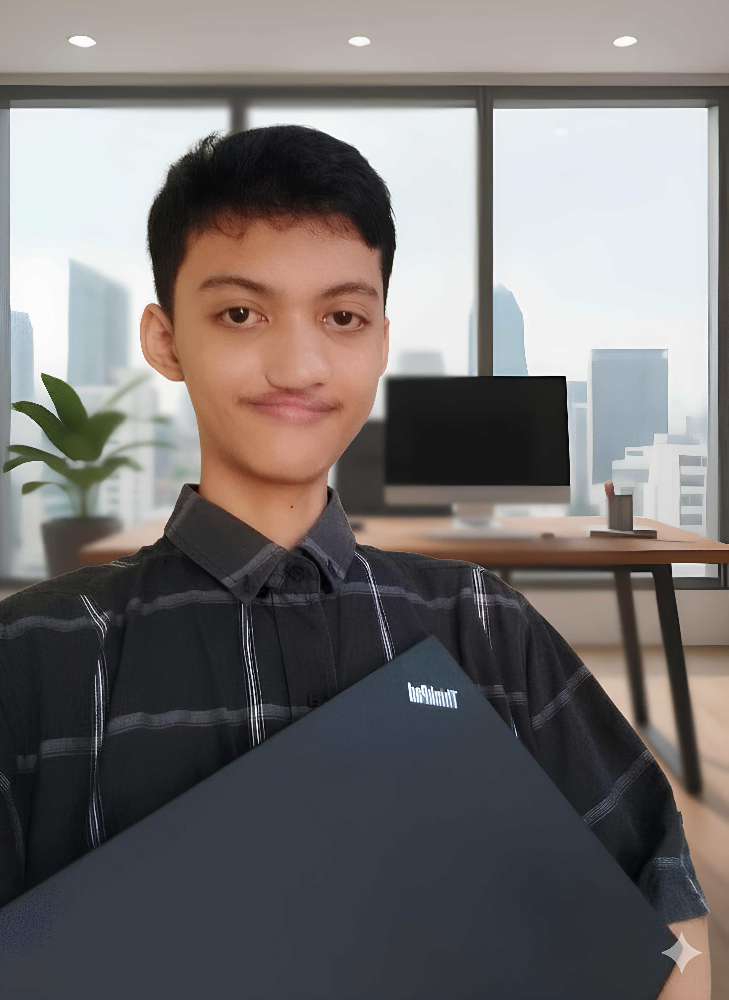
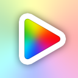
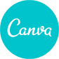

Halo, Saya Karim.
CREATIVE DESIGNER MULTITALENTA
Mengubah ide menjadi pengalaman visual yang kuat melalui Desain UI, Pemodelan 3D, dan Produksi Konten Video.
Tentang Saya
"Saya Karim, seorang Desainer Kreatif Multitalenta yang menguasai berbagai medium visual dan digital. Keahlian inti saya mencakup Desain Antarmuka Pengguna (UI) menggunakan Figma, serta Pemodelan dan Animasi 3D menggunakan Blender dan Inkscape. Selain itu, saya memiliki kemampuan teknis dasar dalam HTML & CSS dan mahir dalam produksi konten video yang cepat menggunakan Capcut dan Vidmix."
Pengalaman Kerja
Designer
April 2023 - Agustus 2025Kota Bekasi
PT Mekanika Digital Pratama (MDP)
- Bertanggung jawab penuh atas perancangan antarmuka pengguna (User Interface Design).
- Tugas utama meliputi mendesain software dan memastikan kualitas pengalaman pengguna (User Experience).
- Keluar karena alasan pribadi.
UI/UX Designer
Januari 2022 - Maret 2023Kota Bandung
Startup Tech Indonesia
- Mendesain user experience untuk aplikasi mobile dan web.
- Melakukan user research dan usability testing.
- Berkolaborasi dengan developer untuk implementasi design.
Graphic Designer
Juni 2021 - Desember 2021Kota Surabaya
Digital Creative Agency
- Membuat desain grafis untuk media sosial dan marketing.
- Mengembangkan brand identity untuk berbagai klien.
- Produksi konten visual untuk campaign digital.
UI/UX Designer
Januari 2022 - Maret 2023Kota Bandung
Startup Tech Indonesia
- Mendesain user experience untuk aplikasi mobile dan web.
- Melakukan user research dan usability testing.
- Berkolaborasi dengan developer untuk implementasi design.
Graphic Designer
Juni 2021 - Desember 2021Kota Surabaya
Digital Creative Agency
- Membuat desain grafis untuk media sosial dan marketing.
- Mengembangkan brand identity untuk berbagai klien.
- Produksi konten visual untuk campaign digital.
Skill Professional
SOFT SKILL
HARD SKILL
SOFTWARE & TOOLS

Vidmix
CanvaPortofolio Saya
Hubungi Saya
Tertarik untuk berdiskusi tentang proyek atau kolaborasi? Berikut adalah kontak yang dapat Anda hubungi untuk diskusi dan informasi lebih lanjut.
Judul Proyek
Kategori
Deskripsi lengkap proyek akan dimuat di sini.